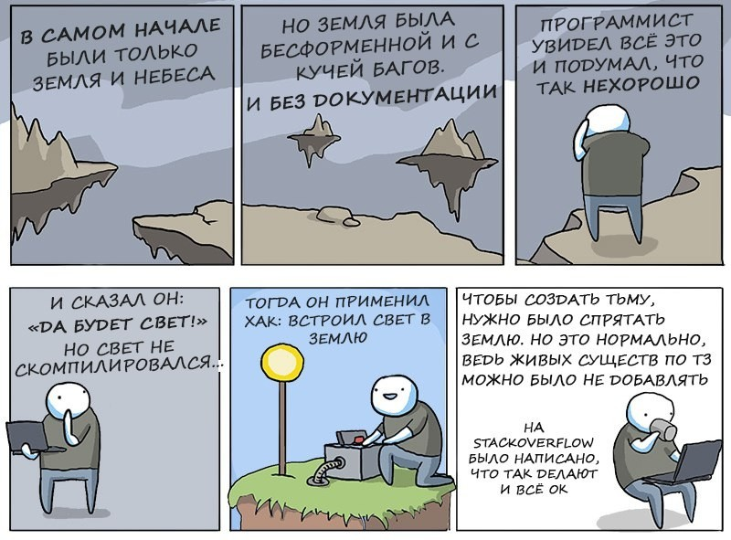
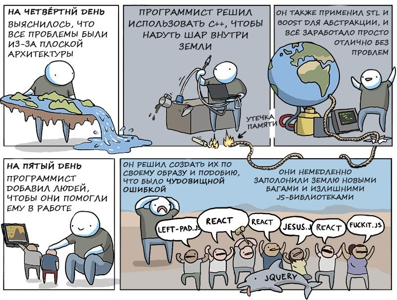

Шаг первый. В самом начале были только земля и небеса...

Шаг второй. Бог сумел создать целый мир всего за 6 дней по единственной причине – у него не было предыдущих версий и проблем совместимости.
Шаг третий. На самом деле большинство багов – это фичи, просто не задокументированные

Вывод: Никогда не пишите на пределе своих талантов! Помните: отладка – всегда в два раза сложнее написания кода. И если вы напишете настолько умно, насколько способны, отладить его вы уже не сумеете.